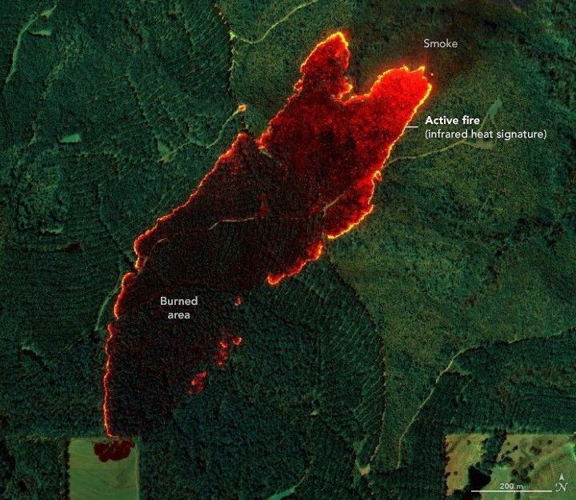

Wildfire Maps Help Firefighters in Real Time
A NASA sensor recently provided a new approach to battling wildfires, delivering real-time data that helped firefighters contain a blaze in Alabama. The instrument, AVIRIS-3 (Airborne Visible Infrared Imaging Spectrometer 3), detected a 120-acre fire on March 19, 2025, before it had been reported to officials.
Flying aboard a King Air B200 research plane about 3 miles (5 kilometers) east of Castleberry, Alabama, a scientist analyzed the AVIRIS-3 data in real time. The information was sent via satellite internet to ground-based fire officials and researchers, who distributed images of the fire’s perimeter to firefighters’ handheld devices.
From detection to field alert took only a few minutes. The data pinpointed the blaze location, showed its perimeter, and helped firefighters decide where to allocate personnel and equipment.
“This is very agile science,” said Robert Green, AVIRIS program principal investigator and senior research scientist at NASA’s Jet Propulsion Laboratory (JPL). AVIRIS-3 belongs to a line of imaging spectrometers built at JPL since 1986, used to study phenomena including wildfires by measuring sunlight reflecting from the surface.
Observing the ground from about 9,000 feet (3,000 meters), AVIRIS-3 participated in the NASA 2025 FireSense Airborne Campaign, flying over Alabama, Mississippi, Florida, and Texas in the second half of March. During the campaign, researchers mapped at least 13 wildfires and prescribed burns, along with dozens of small hot spots, all in real time.
For the Castleberry Fire, having a clear picture of where the fire was burning most intensely enabled firefighters to focus on the northeastern edge. Two days later, AVIRIS-3 spotted a fire about 4 miles (2.5 kilometers) southwest of Perdido, Alabama. Officials noticed the main hot spot was contained inside the perimeter, allowing them to shift resources to fires near Mount Vernon, Alabama.
Using AVIRIS-3 maps, crews at Mount Vernon established fire breaks beyond the northwestern end of the fire, ultimately containing the blaze within about 100 feet (30 meters) of four buildings.
During the flights, researchers created three types of maps for fire response:
Fire 2400 nm Quicklook was especially useful for fire crews, helping Alabama Forestry Commission personnel determine where to deploy bulldozers to halt the fire’s spread. Additionally, FireSense staff digitized fire perimeters for fast, comprehensive intelligence on the ground.
Typically, imaging spectrometer data takes days or weeks to process into detailed multilayer products for research. By simplifying calibration algorithms, researchers processed data onboard the aircraft in a fraction of the time. Satellite internet allowed near-immediate distribution of images while the plane was still in flight.
“Fire moves a lot faster than a bulldozer, so we have to try to get around it before it overtakes us. These maps show us the hot spots,” said Ethan Barrett, fire analyst for the Alabama Forestry Commission. “When I get out of the truck, I can say, ‘OK, here’s the perimeter.’ That puts me light-years ahead.”
AVIRIS and the FireSense Airborne Campaign are part of NASA’s efforts to leverage airborne technologies to combat wildfires. NASA also recently demonstrated a prototype from its Advanced Capabilities for Emergency Response Operations project, providing reliable airspace management for drones and aircraft operating above wildfires.